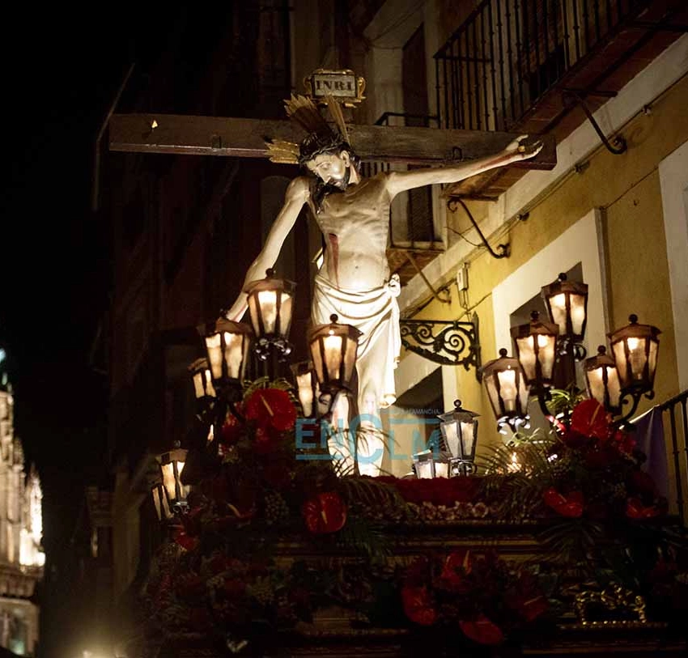
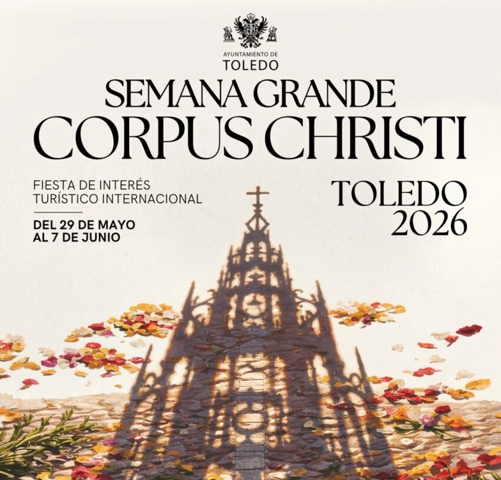
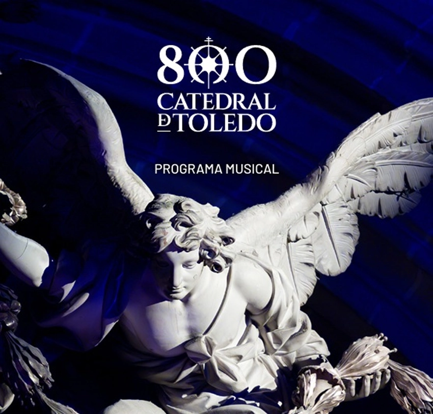
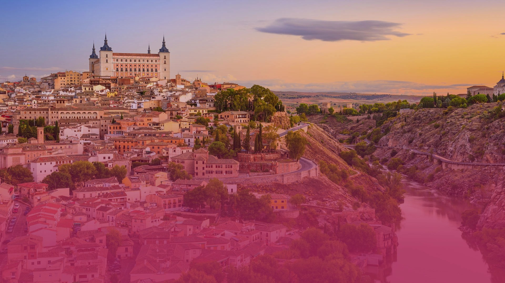

>>>>>>> f1f6c7e034f1424887b553288add4f145d25f811
>>>>>>> f1f6c7e034f1424887b553288add4f145d25f811

======= >>>>>>> f1f6c7e034f1424887b553288add4f145d25f811
>>>>>>> f1f6c7e034f1424887b553288add4f145d25f811
29/03/2026
Semana Santa

======= >>>>>>> f1f6c7e034f1424887b553288add4f145d25f811
>>>>>>> f1f6c7e034f1424887b553288add4f145d25f811
04/06/2026
Corpus Christi

=======
>>>>>>> f1f6c7e034f1424887b553288add4f145d25f81103/10/2026